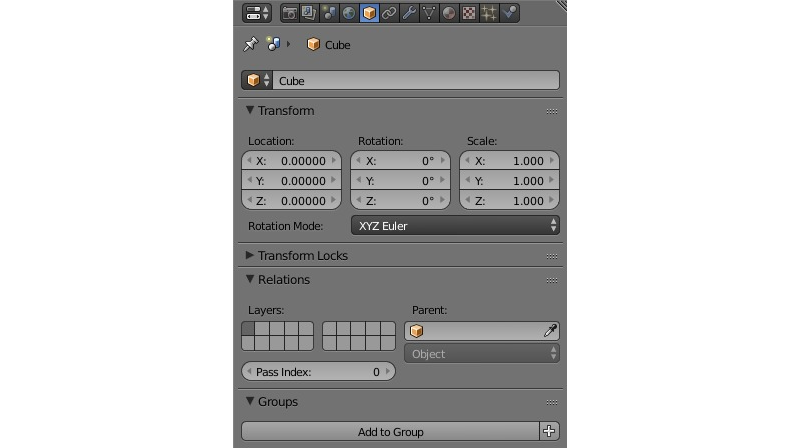
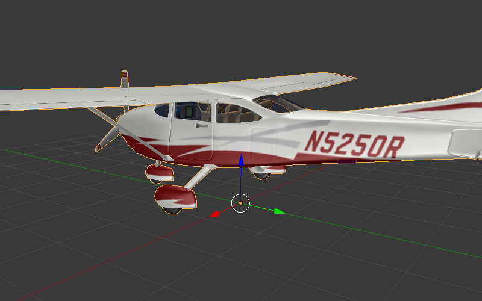

Объекты¶
Объекты служат целям размещения компонентов различного типа (мешей, камер, ламп и т.д.) в пространстве 3D сцены.
Типы¶
Движком поддерживаются объекты следующих типов:
- меш (mesh)
- камера (camera)
- лампа (lamp)
- пустой (empty)
- скелет (armature)
- источник звука (speaker)
- кривая (curve)
- текст (text)
- метасфера (metaball)
- поверхность (surface)
Статические и динамические объекты¶
Все объекты типа MESH можно разделить на статические и динамические.
Статические объекты - объекты, меши которых могут быть объединены друг с другом, если они имеют одинаковый материал.
Динамические объекты - объекты, меши которых не могут быть скомбинированы друг с другом.
Объединение статических объектов - т.н. батчинг (batching) - осуществляется автоматически при загрузке сцены в целях оптимизации количества вызовов отрисовки. Конвертация происходит, даже если на сцене присутствует всего один объект. Центр получившегося в результате конвертации меша находится в начале координат.
Среди объектов другого типа динамическими являются CAMERA и ARMATURE. Остальные - статические.
Объекты, имеющие анимацию, физику или родителя, являющегося динамическим объектом, рассматриваются как динамические.
Перемещение посредством API возможно только в случае динамических объектов. Чтобы обеспечить движение объекта, не имеющего настроек динамического объекта, в его настройках следует активировать опцию Blend4Web > Force Dynamic Object.
Настройка¶
Для объектов всех типов поддерживаются расположение в пространстве, указатель на блок данных, родительский объект, принадлежность к группе и ряд свойств, специфичных для Blend4Web.
Вкладка Object¶
{kind=link}
- Transform > Location
- Координаты местоположения.
- Transform > Rotation
- Углы вращения. При повороте объекта доступны все режимы Rotation Mode, но при создании объектной анимации поддерживаются только Quaternion (WXYZ) и XYZ Euler.
- Transform > Scale
- Масштабирование. Все 3 компоненты (x, y, z) должны быть одинаковы. Для физических объектов масштабирование не поддерживается.
- Relations > Parent
- Указатель на родительский объект.
- Groups
- Группы объектов, которым принадлежит данный объект.
- Blend4Web > Do Not Export
- Не экспортировать.
- Blend4Web > Apply Scale
- Применить масштабирование объекта при экспорте.
- Blend4Web > Apply Modifiers
- Применить модификаторы объекта при экспорте. При наличии модификатора SKIN рекомендуется применить его перед экспортом, т.к. он сбрасывает слои вертексных цветов и UV-текстур, что может привести к ошибкам экспорта.
- Blend4Web > Export Vertex Animation
- Экспортировать предварительно созданную и сохраненную вертексную анимацию. Актуально только для объектов типа MESH.
- Blend4Web > Export Edited Normals
- Экспортировать предварительно отредактированные и сохраненные нормали. Актуально только для объектов типа MESH.
- Blend4Web > Animation > Use Default
- Начать воспроизведение в движке связанной с объектом анимации.
- Blend4Web > Animation > Animation blending
- Только для арматурных объектов. Разрешить плавный переход от одной скелетной анимации к другой.
- Blend4Web > Animation > Behavior
- Поведение анимации при достижении последнего кадра: Finish Stop - остановить, Finish Reset - остановить и сбросить в нулевой кадр, Loop - циклически повторять.
- Blend4Web > Do Not Batch
- Принудительно сделать объект динамическим.
- Blend4Web > Force Dynamic Geometry
- Разрешить изменение геометрии объекта через API Blend4Web.
- Blend4Web > Disable Frustum Culling
- Отключить оптимизацию отсечением по зоне видимости.
- Blend4Web > Disable Fogging
- Отключить туман для объекта.
- Blend4Web > Do Not Render
- Отключить рендеринг объекта (например, вспомогательный объект физики).
- Blend4Web > Shadows: Cast
- Объект будет отбрасывать тени.
- Blend4Web > Shadows: Cast Only
- Объект будет отбрасывать тени, при этом сам будет оставаться невидимым. Становится доступным после включения Blend4Web > Shadows: Cast.
- Blend4Web > Shadows: Receive
- Разрешить затенение от прилегающих объектов (получение теней) на объекте.
- Blend4Web > Reflections: Reflexible
- При включении объект будет отражаться от зеркальных поверхностей.
- Blend4Web > Reflections: Reflexible only
- При включении объект будет отражаться, при этом сам будет оставаться невидимым. Становится доступным после включения Blend4Web > Reflections: Reflexible.
- Blend4Web > Reflections: Reflective
- При включении объект будет отражать своей поверхностью другие объекты.
- Blend4Web > Reflections: Reflection Plane
- Текстовое поле для названия пустого объекта, задающего плоскость отражения. Становится доступным после включения Blend4Web > Reflections: Reflective.
- Blend4Web > Caustics
- На объекте будут видны эффекты от прилегающей к нему воды (каустика).
- Blend4Web > Wind Bending
- Включить процедурную анимацию под действием ветра.
- Blend4Web > Selectable
- Разрешить выделение объекта с помощью мыши или другого устройства ввода, а также его подсвечивание (эффект Glow).
- Blend4Web > Billboard
- Использовать объект в качестве билборда (т.е. автоматически ориентировать его относительно камеры).
- Blend4Web > Preserve Global Orientation and Scale
- Билбординг объекта с учетом его ориентации и масштабирования в мировом пространстве. Объект всегда будет обращен к камере той стороной, которая видна при взгляде на него вдоль направления оси Y в системе координат Blender’а. Становится доступным после включения Blend4Web > Billboard.
- Blend4Web > Billboard Type
- Способ ориентирования билборда. Spherical (по умолчанию) - объект всегда ориентирован к камере одной стороной независимо от угла обзора, Cylindrical - аналогично Spherical, только вращение ограничено осью Z мирового пространства в Blender. Становится доступным после включения Blend4Web > Billboard.
- Blend4Web > LOD Transition Ratio
- Параметр для сглаживания переключения между LOD объектами. Определяет, на каком дополнительном расстоянии LOD объекты будут видны до замены последующими LOD объектами. Назначается для главного объекта. Измеряется в долях от радиуса охватывающей сферы объекта.
- Blend4Web > Enable Meta Tags
Интерфейс добавления мета-тегов на объект:
- Blend4Web > Tags > Title
- Заголовок объекта.
- Blend4Web > Tags > Category
- Категория объекта.
- Blend4Web > Tags > Description
- Описание объекта.
- Blend4Web > Anchor > Enable Anchor
Опция доступна только для объектов типа EMPTY. Интерфейс добавления графических меток (якорей) к объектам:
- Blend4Web > Anchor > Type
- Тип якоря. Аннотация (Annotation) - информация из мета-тегов объектов отображается в раскрывающихся информационных окнах стандартного дизайна. Элемент (Custom Element) - в качестве якоря можно назначить произвольный HTML-элемент с текущей веб-страницы. Общий (Generic) - якорь, положение которого можно определить с помощью API модуля anchors.
- Blend4Web > Anchor > Detect Visibility
- Определять видимость якоря, т.е. реагировать на перекрытие объекта-якоря другими объектами. Активация опции приводит к падению производельности рендеринга и должна рассматриваться только в случае реальной необходимости.
Вкладка Physics (в режиме Blender Game)¶

- Blend4Web > Detect collisions
- Активировать связанную с объектом физику.
- Blend4Web > Floating
- Сделать объект плавучим. Подробное описание настроек плавучих объектов можно найти в разделе физика.
- Blend4Web > Vehicle
- Активировать использование объекта в качестве составной части транспортного средства. Подробное описание настроек транспортных средств можно найти в разделе физика.
- Blend4Web > Character
- Активировать использование объекта в качестве физического каркаса игрового персонажа. Подробное описание настроек персонажа можно найти в разделе физика.
Управление перемещением объектов¶
Примечание
Необходимо обеспечить, чтобы объект, над которым выполняется преобразование, был динамическим.
Для управления перемещением объектов в движке предусмотрены следующие базовые функции модуля transform:
- get_translation
- Получить координаты центра объекта. Вариант с одним параметром возвращает новый вектор (неоптимизированный вариант), вариант с двумя требует отдельного вектора для записи результата.
- get_rotation
- Получить кватернион поворота объекта. По аналогии с get_translation имеется два варианта вызова функции.
- get_scale
- Получить значение коэффициента увеличения объекта.
- set_translation, set_translation_v
- Переместить центр объекта в указанное место. Первая функция принимает в качестве параметров отдельные координаты, вторая - трёхмерный вектор (Array или Float32Array).
- set_rotation, set_rotation_v
- Установить кватернион поворота объекта. Первая функция принимает в качестве параметров отдельные координаты, вторая - четырёхмерный вектор (Array или Float32Array).
- set_scale
- Установить коэффициент увеличения объекта. Единица соответствует исходному состоянию. Значение меньше единицы - уменьшение. Значение больше единицы - увеличение. Не все объекты могут быть увеличены. В частности, увеличение невозможно для физических объектов.
- set_rotation_euler, set_rotation_euler_v
- Установить поворот объекта с помощью углов Эйлера. Используется внутренняя (intrinsic) система поворота YZX (то есть углы следуют в последовательности YZX, сама система отсчёта при этом вращается и занимает каждый раз новое положение).
Кватернионы¶
Кватернионы представляют собой четырёхмерные векторы, используемые для осуществления поворотов. Использование кватернионов обладает рядом преимуществ перед другими способами представления поворотов:
- Не имеет неоднозначности и зависимости от порядка применения поворотов, которые имеют место в случае использования углов Эйлера.
- Более эффективное использование памяти (от 2-х до 4-х раз меньше в зависимости от типа используемой матрицы).
- Высокая эффективность вычисления серии поворотов, чем при использовании матриц.
- Нейтрализация ошибок умножения, возникающих вследствие неточности чисел с плавающей запятой.
- Удобный метод интерполяции.
- Кватернионы имеют ряд недостатков:
- Поворот вектора с помощью кватерниона более сложная в вычислительном плане операция чем поворот с использованием матрицы.
- Использование кватернионов для представления отличных от поворота преобразований (перспективная или ортогональная проекция) затруднено.
Для удобства работы с кватернионами в движке имеется ряд функций:
- quat.multiply
- Умножение кватернионов. Умножение кватерниона А на кватернион Б слева A*Б является поворотом на A. То есть у объекта уже имеется некий поворот Б, который мы дополняем новым поворотом на A.
- quat.setAxisAngle
- Кватернион представляет собой иную форму записи поворота относительно произвольной оси (вектора) на произвольный угол. Положительное направление поворота отсчитывается против часовой стрелки, если смотреть с конца вектора. Например вызов quat.setAxisAngle([1,0,0], Math.PI/3, quat) сформирует кватернион, который может быть использован для осуществления поворота относительно оси X на 60 градусов (против часовой стрелки, если смотреть с конца оси X).
- quat.slerp
- Сферическая интерполяция кватернионов. Используется для осуществления плавного разворота объектов и анимации.
- util.euler_to_quat, util.quat_to_euler.
- Преобразование из углов Эйлера и наоборот.
Пример работы с кватернионами¶
Требуется повернуть объект на 60 градусов в горизонтальной плоскости вправо. В программе Blender имеется соответствующая модель с названием “Cessna”.
{kind=link}
Сохраним ссылку на объект в движке в переменной aircraft:
var aircraft = m_scenes.get_object_by_name("Cessna");
Осуществим поворот:
- Расположение координатных осей в Blender’е и в движке различается, и при экспорте произойдет преобразование: [X Y Z] (Blender) -> [X -Z Y] (движок). Поэтому поворот нужно осуществлять относительно оси Y, а не Z.
- Повороту вправо соответствует поворот по часовой стрелке, т.е. в отрицательном направлении.
- 60 градусов = \(\pi/3\) радиан.
В итоге получаем:
// compose quaternion
var quat_60_Y_neg = m_quat.setAxisAngle([0, 1, 0], -Math.PI/3, m_quat.create());
// get old rotation
var quat_old = m_transform.get_rotation(aircraft);
// left multiply: quat60_Y_neg * quat_old
var quat_new = m_quat.multiply(quat_60_Y_neg, quat_old, m_quat.create());
// set new rotation
m_transform.set_rotation_v(aircraft, quat_new);
Оптимизированный вариант, не приводящий к созданию новых объектов:
// cache arrays as global vars
var AXIS_Y = new Float32Array([0, 1, 0])
var quat_tmp = new Float32Array(4);
var quat_tmp2 = new Float32Array(4);
...
// rotate
m_quat.setAxisAngle(AXIS_Y, -Math.PI/3, quat_tmp);
m_transform.get_rotation(aircraft, quat_tmp2);
m_quat.multiply(quat_tmp, quat_tmp2, quat_tmp);
m_transform.set_rotation_v(aircraft, quat_tmp);
Копирование объектов (инстансинг)¶
Часто возникает необходимость копирования объектов (инстансинг) во время работы приложения.
- Существует ряд ограничений на копируемые объекты:
- тип объекта должен быть MESH
- объект должен быть динамическим (включить настройку Blend4Web > Force Dynamic Object)
- объект должен принадлежать активной сцене
Простое копирование¶
В случае простого копирования для объекта-копии будет использоваться геометрия объекта, с которого осуществлялось копирование. При изменении геометрии на исходном объекте, геометрия изменится и на объекте-копии.
Глубокое копирование¶
При глубоком копировании новый объект будет обладать уникальными для него свойствами, а именно, он будет иметь свою собственную геометрию. То есть при изменении геометрии на объекте-оригинале у объекта-копии геометрия изменяться не будет. Для такого типа копирования на исходном объекте нужно дополнительно выставить опцию Blend4Web > Force Dynamic Geometry.
Для копирования объектов в модуле objects.js предусмотрена функция copy, в которую надо передать идентификатор копируемого объекта, уникальное имя нового объекта и булеву переменную, определяющую тип копирования: true- глубокое, false - простое. По умолчанию будет осуществлено простое копирование.
Созданный при копировании объект необходимо добавить на сцену. Для этого в модуле scenes.js существует функция append_object, куда нужно передать объект, полученный копированием.
// ...
var new_obj = m_objects.copy(obj, "New_name", true);
m_scenes.append_object(new_obj);
m_transform.set_translation(new_obj, 2, 0, 2);
// ...
Удаление объектов¶
Для удаления объектов, созданных копированием, в модуле scenes.js предусмотрена функция remove_object, куда надо передать объект. Возможно удаление только объектов-копий.
// ...
m_objects.remove_object(new_obj);
// ...